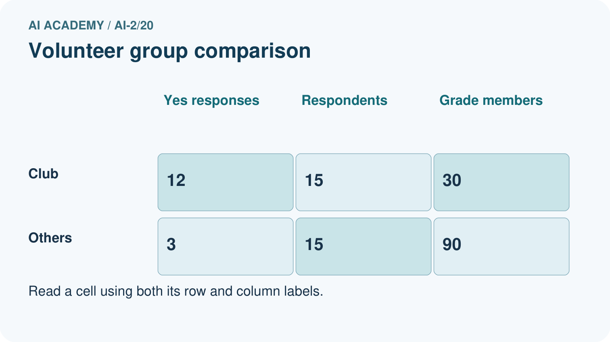
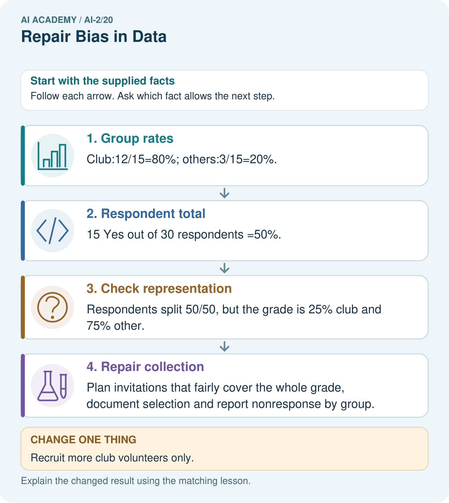
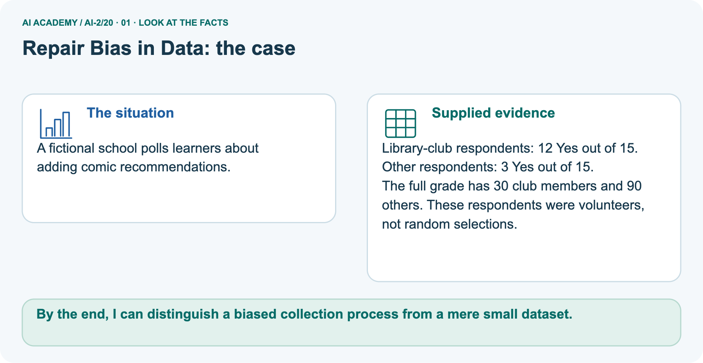
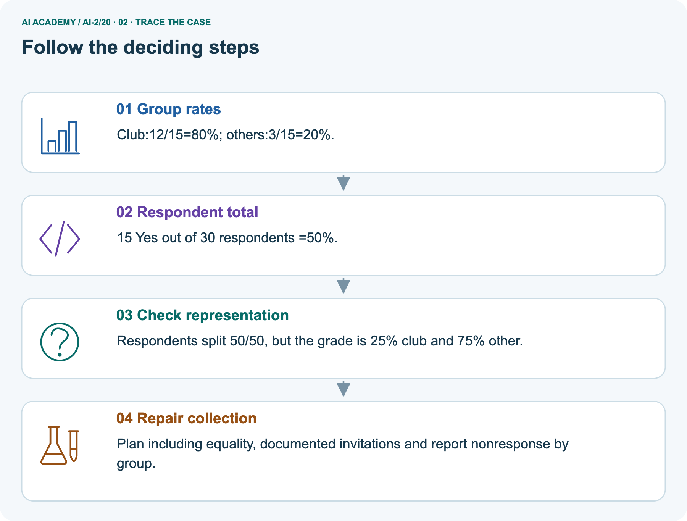
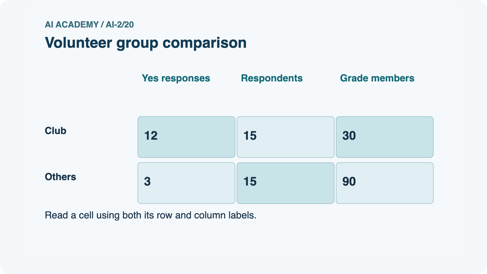
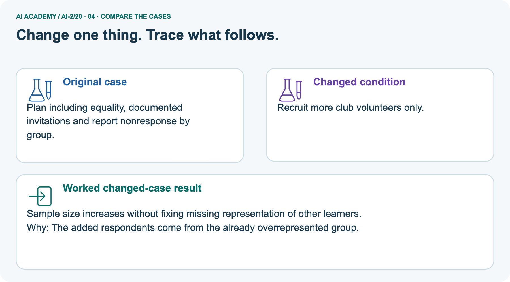
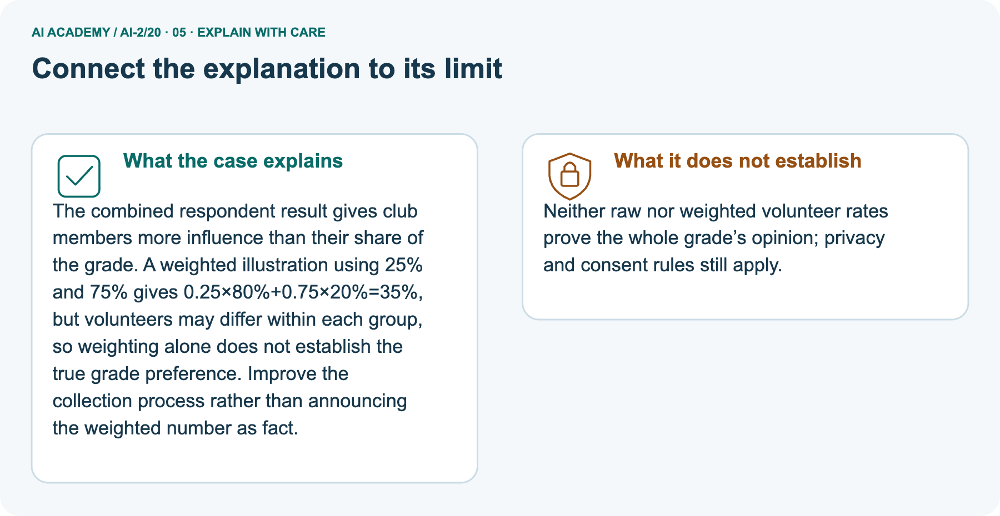
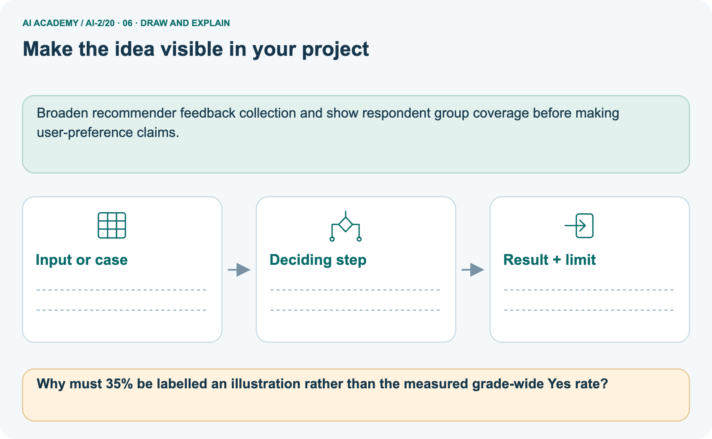

AI Academy · Level 2 · Grade 7 · Week 20 · Workbook
Repair Bias in Data
Learn to understand, design, build, test and explain AI systems responsibly.
Project: Transparent Book Recommender
Workbook · 1 of 21
Recall and choose your starting point
Record your starting explanation for Repair Bias in Data before opening notes. Show any later correction separately.
Try the recall before opening notes. Then use a different colour or a labelled second line to correct your explanation.
Sampling and Representation
Without opening the old lesson, explain one key idea from Sampling and Representation. Give an example and a mistake that the idea helps you avoid.
Noise and Outliers
Without opening the old lesson, explain one key idea from Noise and Outliers. Give an example and a mistake that the idea helps you avoid.
Decision Trees
Without opening the old lesson, explain one key idea from Decision Trees. Give an example and a mistake that the idea helps you avoid.
Workbook · 2 of 21
Practise with fading help
Complete the supported Repair Bias in Data trace and record the first step you can explain without help.
Use W2: Combine counts for Selection bias and coverage. Record the answer once; the lesson and workbook refer to the same attempt.
| Given inputs | Procedure I chose | Middle steps | Result and check |
|---|---|---|---|
Workbook · 3 of 21
Individual reasoning check
Check the proposed Repair Bias in Data explanation against the supplied facts before discussing it.
Use the worked case for Selection bias and coverage. Proposed explanation: “A successful run proves the conclusion”. Decide whether this explanation is supported.
Point to the step or supplied fact that decides; explain your repair if needed.
Workbook · 4 of 21
Independent transfer case
Write one first attempt at the reserved independent case before feedback. Repeated copies of that case refer to the same recorded attempt.
Independent case: Audit independently
A survey has 18 Yes of 20 club members and 2 Yes of 10 others. Compute both group rates and combined rate. Explain why 20/30 does not automatically describe the whole grade.
Attempt this case before feedback. Record any help. Earlier examples below are further practice; a case already practised with feedback cannot establish fresh transfer.
Workbook · 5 of 21
Your learning target
Connect the Repair Bias in Data target to a trace and a justified conclusion.
A catalogue has 30 adventure titles and 2 poetry titles. A recommender rarely suggests poetry. Design a repair and an evaluation that distinguishes catalogue coverage from scoring preference.
Workbook · 6 of 21
Solve the given case
Solve the supplied Repair Bias in Data case and show the deciding evidence.
Training has eighteen adventure readers and two poetry readers; many intended users prefer poetry.
Propose repair and evaluation.
Show your trace, calculation or evidence
Workbook · 7 of 21
Check a changed case
Apply the procedure to the changed case and record why the conclusion follows.
A dataset has 18 adventure readers and 2 poetry readers. A recommender ignores poetry preferences. What would you inspect and test after a repair?
My independent answer and reason
Week 20 Test and reflect
Workbook · 8 of 21
Design a revealing test
Specify a changed input, expected result and observation separately.
Create a changed input, boundary case or missing-information case. Write the expected answer or safe response before testing.
| Test record | My evidence |
|---|---|
| Changed input or condition | |
| Expected answer or fallback | |
| Observed result | |
| Why the result occurred |
Workbook · 9 of 21
Project checkpoint
Justify what Repair Bias in Data adds to Transparent Book Recommender and keep the evidence.
Change feature coverage or weights only after locating which reader profiles are underserved.
The project change and evidence I will keep
Workbook · 10 of 21
Self check
Judge explanation, evidence, transfer and limits separately; attach the work behind your judgement.
- I can explain the mechanism.
- I can show evidence.
- I can handle a changed case.
- I can name a limit.
Mark each as not yet, with help or independently, and attach supporting work.
Teacher review ____________________ Next step ____________________
Workbook · 11 of 21
Transfer practice from the original programme
Use this earlier case as transfer practice. A case already discussed with feedback is not fresh assessment evidence.
A catalogue has 30 adventure titles and 2 poetry titles. A recommender rarely suggests poetry. Design a repair and an evaluation that distinguishes catalogue coverage from scoring preference.
Record support used: none, hint or teacher explanation.
Workbook · 12 of 21
W1 Locate undercoverage
Locate undercoverage. Apply the supplied Repair Bias in Data facts and keep your reasoning.
A morning-only survey claims to represent all library visitors. Which visitors may be missed?
Workbook · 13 of 21
W2 Combine counts
Combine counts. Apply the supplied Repair Bias in Data facts and keep your reasoning.
Group A has 3 Yes of 4 and B has 2 Yes of 6. Find the combined proportion.
Workbook · 14 of 21
W3 Repair the collection
Repair the collection. Apply the supplied Repair Bias in Data facts and keep your reasoning.
A form is shared only in the robotics club. How can the process better cover the grade?
Workbook · 15 of 21
W4 Audit independently
Attempt before feedback. If this repeats the selected independent case, reuse that first attempt; otherwise keep a separate record. Audit independently. Apply the supplied Repair Bias in Data facts and keep your reasoning.
A survey has 18 Yes of 20 club members and 2 Yes of 10 others. Compute both group rates and combined rate. Explain why 20/30 does not automatically describe the whole grade.
Workbook · 16 of 21
W5 Avoid causal claims
Avoid causal claims. Apply the supplied Repair Bias in Data facts and keep your reasoning.
Club members favor coding more often. Does club membership necessarily cause that preference?
Workbook · 17 of 21
Feedback, return check and learning record
Record the first repaired step and a different case to revisit after a delay.
| Evidence | My record |
|---|---|
| Worked alone / hint / model | |
| First step I repaired and why | |
| New case checked later; date and result | |
| What I can now explain without notes | |
| One remaining question |
Revisit this idea with your teacher after a delay. Familiarity is different from explaining and using it on a changed case.
Workbook · 18 of 21
Pictorial case practice: Repair Bias in Data
A fictional school polls learners about adding comic recommendations. Explain the labelled step before checking the changed condition.
A fictional school polls learners about adding comic recommendations.
Library-club respondents: 12 Yes out of 15. Other respondents: 3 Yes out of 15.
The full grade has 30 club members and 90 others. These respondents were volunteers, not random selections.


Why must 35% be labelled an illustration rather than the measured grade-wide Yes rate?
Record the help used
Support used: alone / hint / worked example. This record is practice evidence.
Project connection: Broaden recommender feedback collection and show respondent group coverage before making user-preference claims.
Workbook · 19 of 21
Project portfolio milestone
Keep this week’s input, deciding step, result and limit together in the Transparent Book Recommender record.
Project: Transparent Book Recommender
Current milestone: Evaluate and revise. Compare with your starting method, explain errors and record a justified revision.
Broaden recommender feedback collection and show respondent group coverage before making user-preference claims.
| Evidence to keep | My record |
|---|---|
| This week’s input and deciding step | |
| Prediction and actual result (or labelled paper trace) | |
| One change since the previous checkpoint and why | |
| One error or limit and the next test |
Workbook · 20 of 21
Supported practice and learning evidence
Try the supported questions before comparing with hints and feedback. Record what you repaired and the evidence you retained.
Use this supported practice once, in the browser or on paper. Keep the reserved independent assessment for a separate first attempt before teacher feedback.
A fictional school polls learners about adding comic recommendations.
Practice 1: explain the deciding evidence
Which labelled step matches this detail? Plan including equality, documented invitations and report nonresponse by group.
1. Group rates
2. Respondent total
3. Repair collection
4. Check representation
Hint · try first
Hint if needed: Read the steps in the pictorial case. Match the supplied detail to the stage that performs or records it.
Feedback · compare after trying
After your attempt, compare with the supported explanation: Repair collection Plan including equality, documented invitations and report nonresponse by group.
The combined respondent result gives club members more influence than their share of the grade.
A weighted illustration using 25% and 75% gives 0.25×80%+0.75×20%=35%, but volunteers may differ within each group, so weighting alone does not establish the true grade preference.
Improve the collection process rather than announcing the weighted number as fact.
Practice 2: explain the deciding evidence
Changed case · predict first
Changed-case practice: Recruit more club volunteers only. Which conclusion is supported by the supplied facts?
1. This one example guarantees correct results for every future input.
2. Sample size increases without fixing missing representation of other learners.
3. We can decide the result without examining the changed input or the procedure.
Hint · try first
Hint if needed: Use the changed condition and the deciding step in the pictorial trace. The answer must say what follows from those facts.
Feedback · compare after trying
After your attempt, compare with the supported explanation: Sample size increases without fixing missing representation of other learners. The added respondents come from the already overrepresented group.
Repair a missing building block
Review Sampling and Representation (ai-2/19). Goal: Define a question and target population. Short practice: Can 80% response be reported as 80% of the whole grade responding?. Return to this week and explain what you changed.
Review Noise and Outliers (ai-2/17). Goal: Calculate mean and median. Short practice: If 18 was genuine, which summary better describes the middle observed task, and what extra fact should be shown?.
Return to this week and explain what you changed.
Review Decision Trees (ai-2/14). Goal: Fit a root question and leaf predictions from training examples. Short practice: Why does changing colour alone not change this tree’s prediction?.
Return to this week and explain what you changed.
Predict, run and debug
The browser lab lets you edit the supported Python examples already included in this lesson. Predict first, run, inspect the actual output or error, change one input, then run again.
Keep code, predictions, actual results and a reasoned revision together. On paper, label your result as a trace rather than an execution.
Keep your completed work
Use Download completed work in the hosted lesson to export your answers, reflections, practice feedback and code-run evidence. Open the HTML copy to read or print it.
Drafts stay in this browser when storage is available; clear drafts on a shared device.
Workbook · 21 of 21
Visual concept journey
Explain each Repair Bias in Data picture from its labels, then record a relevant limit.
01. Repair Bias in Data: the case

A fictional school polls learners about adding comic recommendations. Supplied facts: Library-club respondents: 12 Yes out of 15. Other respondents: 3 Yes out of 15. The full grade has 30 club members and 90 others.
These respondents were volunteers, not random selections.
Point to the given fact that matters most. Explain why it matters.
02. Follow the deciding steps

Group rates: Club:12/15=80%; others:3/15=20%. → Respondent total: 15 Yes out of 30 respondents =50%. → Check representation: Respondents split 50/50, but the grade is 25% club and 75% other. → Repair collection: Plan including equality, documented invitations and report nonresponse by group.
Point to each numbered stage and explain which recorded input it uses.
03. Volunteer group comparison

Volunteer group comparison. Club: Yes responses = 12, Respondents = 15, Grade members = 30. Others: Yes responses = 3, Respondents = 15, Grade members = 90.
Read the labels and values. Explain the relationship the model shows.
04. Change one thing. Trace what follows.

Original case: Plan including equality, documented invitations and report nonresponse by group. Changed condition: Recruit more club volunteers only.
Expected result: Sample size increases without fixing missing representation of other learners. Reason: The added respondents come from the already overrepresented group.
Predict before checking the worked changed-case result. Name what changed and what the supplied facts allow you to conclude.
05. Connect the explanation to its limit

The combined respondent result gives club members more influence than their share of the grade.
A weighted illustration using 25% and 75% gives 0.25×80%+0.75×20%=35%, but volunteers may differ within each group, so weighting alone does not establish the true grade preference.
Improve the collection process rather than announcing the weighted number as fact. Limit: Neither raw nor weighted volunteer rates prove the whole grade’s opinion; privacy and consent rules still apply.
Explain the case, then point to a limit on the claim.
06. Make the idea visible in your project

Broaden recommender feedback collection and show respondent group coverage before making user-preference claims. Draw your input, deciding step, result and limit.
Supported question: Why must 35% be labelled an illustration rather than the measured grade-wide Yes rate?
Draw your project trace and justify the deciding step using evidence.